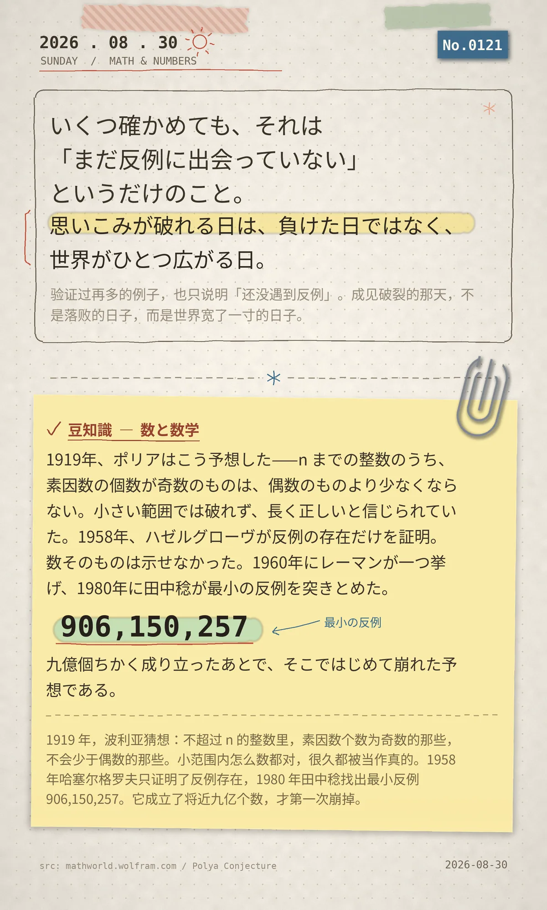

いくつ確かめても、それは「まだ反例に出会っていない」というだけのこと。思いこみが破れる日は、負けた日ではなく、世界がひとつ広がる日。
1919年、ポリアはこう予想した——n までの整数のうち、素因数の個数が奇数のものは、偶数のものより少なくならない。小さい範囲では破れず、長く正しいと信じられていた。1958年、ハゼルグローヴが反例の存在だけを証明。数そのものは示せなかった。1960年にレーマンが一つ挙げ、1980年に田中稔が最小の反例 906,150,257 を突きとめた。九億個ちかく成り立ったあとで、そこではじめて崩れた予想である。
冷知识由执笔的模型自行查证。逐条断言、来源与所引原句存档在纯文字副本里，未经程序逐字校验，留作事后核实。